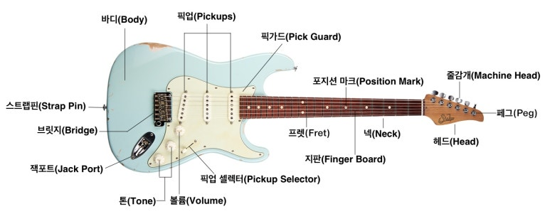
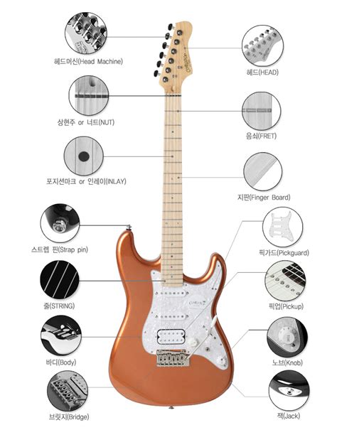

Guitar structure
Guitar structure
Created Jan 11, 2025 - Last updated: Jan 11, 2025
Evergreen 🌳


기타의 구조는 다양한 부품으로 이루어져 있으며, 각각 고유한 명칭과 역할을 가지고 있습니다. 아래는 기타의 주요 부품과 그 명칭입니다:
1. 헤드(Headstock)
- 기타의 상단 부분으로, 줄을 조율하는 머신 헤드(튜너)가 장착되어 있습니다.
2. 머신 헤드(Machine Heads)
- 줄의 장력을 조절해 음정을 맞추는 역할을 합니다. “튜닝 페그(Tuning Pegs)“라고도 합니다.
3. 너트(Nut)
- 헤드와 넥을 연결하는 부분에 위치하며, 줄이 넥으로 내려갈 때 정렬을 유지하도록 도와줍니다.
4. 넥(Neck)
- 기타의 몸체에서 헤드로 이어지는 길쭉한 부분으로, 프렛보드와 트러스 로드 등이 포함되어 있습니다.
5. 프렛보드(Fretboard)
- 넥 위에 위치하며, 줄을 눌러 음정을 만드는 곳입니다. 프렛(금속 막대)이 일정 간격으로 배치되어 있습니다.
6. 프렛(Frets)
- 프렛보드 위에 있는 금속 막대로, 줄을 눌렀을 때 특정 음정을 생성합니다.
7. 포지션 마커(Position Markers)
- 프렛보드에 있는 점이나 무늬로, 특정 위치(3, 5, 7, 12프렛 등)를 쉽게 식별할 수 있도록 도와줍니다.
8. 바디(Body)
- 기타의 메인 구조로, 소리가 공명하는 부분입니다. 종류에 따라 어쿠스틱 기타와 일렉트릭 기타의 바디 구조가 다릅니다.
어쿠스틱 기타의 바디
- 사운드홀(Soundhole): 기타 중앙에 있는 구멍으로 소리를 울리게 합니다.
- 브릿지(Bridge): 줄을 고정하며 진동을 바디로 전달합니다.
- 새들(Saddle): 브릿지 위에 위치하여 줄의 높이를 결정하고, 음정의 정확성을 유지합니다.
- 픽가드(Pickguard): 피크 사용 시 기타 표면을 보호하는 역할을 합니다.
일렉트릭 기타의 바디
- 픽업(Pickups): 줄의 진동을 전기 신호로 변환하는 장치입니다.
- 컨트롤 노브(Control Knobs): 볼륨과 톤을 조절하는 다이얼.
- 트레몰로 브릿지(Tremolo Bridge): 줄의 장력을 조정하여 음의 높낮이를 변화시킬 수 있는 장치.
- 잭 잉렛(Jack Inlet): 앰프와 연결하는 입력 단자.
9. 스트랩 핀(Strap Pins)
- 기타 스트랩을 연결하는 핀으로, 바디의 상단과 하단에 위치합니다.
10. 픽업 셀렉터(Pickup Selector)
- (일렉트릭 기타에서) 픽업 간의 음색 전환을 할 수 있는 스위치입니다.
11. 트러스 로드(Truss Rod)
- 넥 내부에 삽입된 금속 막대로, 넥의 곡률을 조정하여 기타 세팅을 최적화하는 데 사용됩니다.
12. 브릿지 핀(Bridge Pins)
- (어쿠스틱 기타에서) 줄을 브릿지에 고정하는 작은 핀.